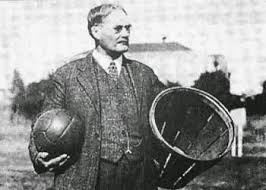

Sejarah
Basket dianggap sebagai olahraga unik karena diciptakan secara tidak sengaja oleh seorang guru olahraga. Pada tahun 1891, Dr. James Naismith, seorang guru Olahraga asal Kanada yang mengajar di sebuah perguruan tinggi untuk para siswa profesional di YMCA (sebuah wadah pemuda umat Kristen) diSpringfield,Massachusetts, harus membuat suatu permainan di ruang tertutup untuk mengisi waktu para siswa pada masa liburan musim dingin di New England.Terinspirasi dari permainan yang pernah ia mainkan saat kecil di Ontario,Naismith menciptakan permainan yang sekarang dikenal sebagai bola basket pada 15 Desember 1891.
Menurut cerita, setelah menolak beberapa gagasan karena dianggap terlalu keras dan kurang cocok untuk dimainkan di gelanggang-gelanggang tertutup, dia lalu menulis beberapa peraturan dasar, menempelkan sebuah keranjang di dinding ruang gelanggang olahraga, dan meminta para siswa untuk mulai memainkan permainan ciptaannya itu. Pertandingan resmi bola basket yang pertama, diselenggarakan pada tanggal 20 Januari 1892 di tempat kerja Dr.James Naismith.Basket adalah sebutan yang diucapkan oleh salah seorang muridnya. Olahraga ini pun menjadi segera terkenal di seantero Amerika Serikat. Penggemar fanatik ditempatkan di seluruh cabang di Amerika Serikat. Pertandingan demi pertandingan pun segera dilaksanakan di kota-kota di seluruh negara bagian Amerika Serikat.
Pada awalnya, setiap tim berjumlah sembilan orang dan tidak ada dribble, sehingga bola hanya dapat berpindah melalui lemparan.
http://duniabaca.com/asal-usul-sejarah-bola-basket.html